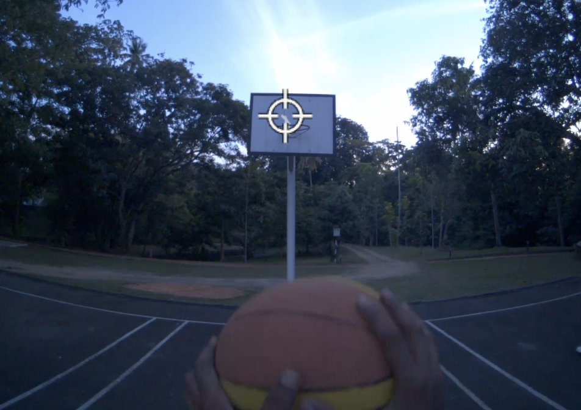
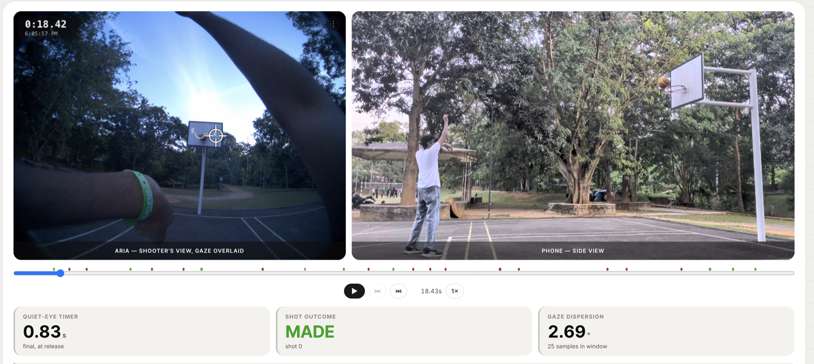

The quietest seconds
wins the shot
The best shooters hold their gaze locked on the target longer than everyone else . WHY? This is the concept of quiet eye. Research has proven training quiet eye can improve your performance in aim sports significantly. For that we introduce Shootbuddy to track your gaze on every shot, so you can train that habit directly and watch your performance follow.

The science
The habit great shooters share
For decades, sports scientists have studied what separates elite performers from everyone else in the instant before they act — a golfer over a putt, a shooter at the free-throw line, a keeper facing a penalty. The pattern shows up again and again: the best performers find the target with their eyes early, then hold their gaze still on it for longer than less consistent performers do. Researchers call this the quiet eye.
Seeing it has usually meant a lab, a calibrated eye tracker, and a technician running the session. Shootbuddy puts that same measurement on your face instead — a pair of smart glasses that read where your eyes are locked, shot after shot.
Methodology
How Shootbuddy tracks your quiet eye
Four stages, from the court to your screen — nothing you have to tag or label by hand.
Put it on, then shoot
Clap three times to mark the start of a shot, then shoot like you normally would. Nothing to hold, nothing to operate mid-shot.
It reads your gaze
The glasses log exactly where your eyes are locked, sample by sample, for every shot in the session — automatically, without anyone tagging a frame.
It finds the moment that matters
Shootbuddy narrows in on the instant between raising up and releasing — the window sports scientists call the quiet eye — and measures how still your gaze held inside it.
It shows you what mattered
See how steady your gaze was on every shot, whether it went in, and the clip to prove it.
Why it's different
Built this way on purpose
A few decisions we made early, and won't compromise on.
Nothing leaves your device
Footage of your face and your eyes is about as personal as data gets. Shootbuddy runs entirely on one computer — nothing is ever uploaded.
Every shot, on video
A number on its own can be wrong and you'd never know it. Every shot Shootbuddy scores comes with the clip, so you can always check it with your own eyes.
Built for a real court
No lab, no green screen. Shootbuddy was built and tested outdoors, on a normal hoop, during a normal practice session.
Honest about uncertain calls
When a shot is too close to call, Shootbuddy says so instead of guessing — and a coach can correct it with a single tap.
Results
What we've seen so far
With the tests we have done so far , it seems to improve free-throw accuracy by a significant margin.

Every shot we've measured
One dot per shot, placed by how steady the gaze held during it. Further left means steadier — the heavy tick on each row is that row's typical shot.
Gaze steadiness during the shot
Where this goes
What's next
Three things we're working toward.
01 A real threshold
Enough sessions to set a genuine, calibrated "steady" line — instead of today's early placeholder.
02 A coach's view
A session summary built for someone coaching a whole team, not just reviewing one shooter's practice.
03 Beyond one shooter
The same idea, tested across more shooters, more courts, and more sessions.
FAQ
Questions, answered
What do I need to use Shootbuddy?
Just Meta's Aria Gen 2 smart glasses on the shooter — that's what tracks your gaze. Clap three times to mark a shot, then shoot, and Shootbuddy takes it from there.
Does any of my footage get uploaded anywhere?
No. Everything is processed on one computer. Nothing about your face, your eyes, or your practice session is sent anywhere else — there is no cloud step and no server it talks to.
What sport does Shootbuddy work with?
Basketball shooting, today — free throws and jump shots from a fixed spot on the court.
How accurate is the made/miss detection?
It watches from the side with no net, so most calls are clear-cut. When a shot is genuinely too close to tell, Shootbuddy flags it as uncertain rather than guessing, and it can be corrected by hand in a single tap.
Is Shootbuddy a finished product?
Not yet. It's an early-stage project, tested so far across two real outdoor practice sessions rather than a lab. The source is open for anyone who wants to see exactly how it works.
See your quiet eye, shot by shot
Shootbuddy is early, on purpose — built in the open, measured on real shots, honest about what it doesn't know yet. Start with how it works.